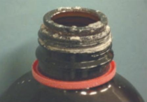

S
A, B, C, D, E, F, G, H, I, J, K, L, M, N, O, P, Q, R, SE, SH, SI, SIN, SK, SL, SM, SN, SO, SPR, SP, SQ, ST, SU, SW, SY, T, U, V, W, X, Y, Z
salvage [sth] vtr 1 (from ship) vtr trarre [qlcs] in salvo, salvare, recuperare (Divers salvaged some of the cargo from the wreck) 2 vtr (things: save what has value) vtr salvare, recuperare (Henry was able to salvage his rare stamp collection before the fire spread throughout the house) 3 vtr figurative (negotiations) (figurato) salvare (The talks had broken down and it wasn't easy to salvage them)
salvage n 1 (saving) nm salvataggio, recupero (Investors were relieved by the salvage of their merchandise from the ship) 2 n (items saved) nm materiale recuperato, nmpl oggetti recuperati (Salvage from the wreck is washing up on the beach)
safely adv (securely, well) loc avv in modo sicuro (Louis made sure the trailer was safely attached to the car) 2 adv (safe) in salvo, al sicuro loc avv, sano e salvo loc agg (Despite the fog, Patricia made it home safely) 3 adv (without taking risks) con prudenza avv 4 (with certainty) avv tranquillamente, indubbiamente, senz'altro (I think you can safely bet Imogen's new boyfriend won't last long; you can see she's getting tired of him already)
safely say [sth] v expr (speak with certainty) vi parlare per certo
SAK [Single leg amputation Above Knee]
sake 1 (purpose) = motivo, ragione, amore, interesse (For the sake of simplicity, let us also assume that ..) 2 (benefit) nm bene, nm amore, nm interesse (I argued for your sake; I had no interest in the dispute)
satin = I n. (Tess) raso m., satin m. II agg. di raso. III v.tr. (Tess,Cart) satinare.
satisfactory adj 1 (meeting requirements) soddisfacente agg (You will only be allowed to start your course upon satisfactory completion of all our admission procedures) 2 adj (good, not great) sufficiente agg (This student's work is satisfactory, but it could be bette)
scale n US (weighing device) (per pesare) nf bilancia
scally n UK, regional, informal (rascal) nm scapestrato, birbante
scan [sth] vtr 1 (text, etc.: look over rapidly) dare una scorsa a, dare un'occhiata a vtr (dare una scorsa) vtr scorrere (Jane scanned the document, checking for errors) 2 (examine visually) vtr scrutare, osservare (Alison scanned the auditorium, trying to see if her friend was there. Paul scanned Daniel's face, trying to determine if he was serious or not) 3 (document: put through scanner) vtr scansionare, scannerizzare, acquisire con lo scanner vtr (Andy scanned the pages he wanted from the book) 4 (medicine: examine [sb] by machine) vtr fare un'ecografia a, fare ecografie a (tramite ecografie, ecc.) vtr esaminare (The clinic scans women for breast cancer) 5 vtr (medicine: examine [sth] by machine) vtr esaminare (The MRI machine scanned Leo's brain but found no tumors)
scan n 1 (medical test by machine) ecografia nf (The doctor sent Marcus to have a scan) 2 n (document output by scanner) (informatica: da scanner) nf scansione, acquisizione (This is a scan of the original document)
scan vi (poetry: conform to metric rules) (poesia) vi essere scandibile, essere metricamente corretto (This verse doesn't scan)
scan [sth] vtr (analyze: verse) vtr scandire (The teacher asked her class to scan the poem)
scapegoat n 1 figurative (person: blamed for others) (figurato) nm capro espiatorio (The project failed and now they desperately need a scapegoat) 2 n (Bible: goat representing sins) capro espiatorio nm (The scapegoat was said to carry people's sins into the wild)
scapegoat [sb] vtr figurative (blame for others) vtr dare la colpa, incolpare
scathing adj figurative (critical, hurtful) (critica, commento) agg feroce, aspro, agg invar tagliente, pungente (The papers today are full of scathing reviews of my book), (Mr. Brandon can be scathing; yesterday his comments had some of his pupils in tears)
scavenger hunt n (searching game) nf caccia al tesoro (Our team won the school's scavenger hunt - La nostra squadra ha vinto la caccia al tesoro della scuola)
scold [sb] vtr (reprimand) vtr rimproverare (colloquiale, figurato) dare una lavata di capo a vtr (informale) vtr fare una ramanzina a
scold n (person who finds fault) nm brontolone, criticone (Cathy is a scold; she's always finding fault with people)
scorch [sth/sb] vtr (burn) vtr bruciacchiare, bruciare (The bottom of the pan got scorched in the fire)
scorch vi (become scorched) vi bruciare, v rif bruciacchiarsi (The cook left the heat too high and the butter scorched)
scorch [sb] vtr figurative, informal (criticize, scold) vtr stroncare, criticare aspramente (figurato: annientare) vtr incenerire scorch vi figurative, informal (drive very fast) vi sfrecciare (The sports car scorched down the highway)
scorch n (superficial burn) nf bruciacchiatura, scottatura superficiale (The metal dish has a black scorch on the bottom)
scorch, leaf scorch, sun scorch n (botany: disease) nm imbrunimento (Scorch had turned the leaves of the horse chestnut reddish-brown)
scorching adj (extremely hot, burning) agg torrido, infuocato, rovente (Even though it's still May, it's scorching outside)
scratch n 1 (cut, scrape on skin) nm graffio, nf sbucciatura, scorticatura (Brian fell off a ladder into a rose bush and he's covered in scratches) 2 n (scrape on surface) nm graffio, nf riga (This old table has several scratches)
scratch [sth] vtr (itch: rub with fingernails) vtr grattare (Sally scratched her itchy foot) 2 vtr (scrape, leave a mark on) vtr graffiare, rigare (Helen scratched her car trying to get into a parking space that was too small) 3 vtr figurative, informal (cancel) vtr cancellare, annullare (So, let's meet on Tuesday. Oh, actually, Tuesday's no good, so scratch that; we'll do Wednesday instead)
scratch vi (rub body with fingernails) v rif grattarsi (Larry had been bitten by mosquitoes and was scratching constantly)
from scratch adv (starting with the raw materials) avv dall'inizio, dal nulla, da zero, partendo da zero, iniziando da zero (I made the cake with no mix, completely from scratch)
screw n (fastener) nf 1 vite (Screws have a better holding power than nails) 2 (threaded pin) nf vite (The screws have a slot or star-shaped head) 3 (turn of a screw) nm giro di vite, nf avvitata (The manual calls for five screws clockwise) 3 vulgar, slang (sex) (volgare: rapporto sessuale) nf scopata, chiavata, trombata (He doesn't love her; he just wants a screw)
screw lid in British English noun another name for screw top.
screw top in British English noun 1. a lid with a threaded rim that is turned on the corresponding thread on the neck of a bottle or container to close it securely 2. a bottle or container having such a lid.
screw vi (fasten with a screw) (chiudersi) v rif avvitarsi (aprirsi) v rif svitarsi (The bottle cap screws on and off)
screw [sth] vtr (turn, twist) vtr avvitare (You need to screw it the other way or it won't work)
screw [sth] to [sth], screw [sth] into [sth], screw [sth] onto [sth] vtr + prep (fasten)vtr avvitare [qlcs] a [qlcs], avvitare [qlcs] su [qlcs] (He screwed the bookshelves to the wall)
screw [sth] into [sth] vtr + prep (contort) vtr contorcere, corrugare (He screwed his face into an expression of extreme concentration) 2 (crumple) vtr arricciare [qlcs] a forma di [qlcs] accartocciare, appallottolare (She screwed the paper into a ball and threw it in the bin)
screw [sb] vtr vulgar, slang (have sex with) (volgare) v rif scoparsi, chiavarsi, farsi (I think Jay screwed that girl last night)
screw vi vulgar, slang (have sex) (volgare) vi scopare, chiavare, trombare (Jack and I spent all night screwing instead of going to the party)
scrounge vi (borrow, beg for [sth]) vtr scroccare (Eddie is scrounging for a free meal again)
scrounge n informal (scrounger) nm accattone, scroccone (She thought anyone who received government aid was a scrounge)
scrounge off [sb] vi + prep informal (live at [sb] else's expense) vi vivere alle spalle di [qlcn], vivere a scrocco di [qlcn] (Even though he's over thirty, Evan is still scrounging off his parents and living at their house)
scrounge [sth] from [sb], scrounge [sth] off [sb] vtr + prep informal (beg for, obtain from others) vtr scroccare [qlcs] da [qlcn] (Beware of Adam; he's always trying to scrounge money off people)
scrubber n (abrasive sponge for washing dishes) nf spugnetta ruvida (spugnetta ruvida) nf paglietta (The lasagne should come off with a scrubber)
scrubber n UK, dated, pejorative, slang (promiscuous woman) (spregiativo) nf donnaccia, donna di facili costumi, sgualdrina 2 (person who cleans) nf donna delle pulizie , persona che fa le pulizie (Maria works as a scrubber at the mansion) 3 (gas, air: purifier) nm gorgogliatore, gorgogliatore di lavaggio (The scientist used a scrubber to purify the gas) 4 AU (animal: run wild) nm animale selvatico 5 (digital editing) (audio) nm scrubber
scrunch [sth] vtr (crumple) vtr accartocciare (Milly scrunched the letter into a ball and tossed it in the bin)
scrunch vi (move with crunching sound) vi scricchiolare (Outside, a car door slammed and footsteps scrunched across the gravel)
seamed adj (sewn together) agg cucito (The seamed strips of fabric were in shades of red and orange) 2 adj figurative (marked by lines, wrinkled) (viso, mani) agg segnato, rugoso (The woman's skirt was well-made, but it was seamed and dirty)
season n 1 (quarter of the year) nf stagione (Summer has always been my favourite season) 2 n (fruit, etc: prime period) (frutta) nf stagione (Late September's the season for blackberries round here) 3 n (sport: active period) (sport) nf stagione, nm periodo (The coach said this season would be the team's best) 4 n (TV show: series of episodes) (serie televisive) nf stagione (Each season of the detective show follows a different case)
season [sth] vtr (add salt, pepper, spice to) vtr insaporire, aromatizzare, condire (They season their food so little that it tastes bland)
season [sth] with [sth] vtr + prep (spice with [sth]) vtr insaporire [qlcs] con, aromatizzare [qlcs] con, condire [qlcs] con (Gwen seasoned the chicken with salt and pepper)
seek (seeks, seeking, sought, sought) (In 1817 Bolzano sought to prove that if a continuos function f ...)
seep vi (liquid: get out) vi filtrare (The juice from the plums was seeping through the bottom of the paper bag) 2 (spread) v rif diffondersi (Light seeped through the curtains) 3 figurative (information) vi trapelare (This information has seeped through from government sources)
separately adv (apart from others) avv separatamente, a parte loc avv (The teacher gave all the other troublemakers detention, but punished the ringleader separately)
seroma = nm sieroma (A seroma is fluid (other than pus or blood) that has collected in the wound.)
set = (A binary operation on a set A is a function f from ...)
set [sb] back vtr + adv (hinder progress of) = vtr ostacolare, bloccare (It really set me back when I lost my job. - Perdere il lavoro mi ha proprio bloccato.)
set [sb] back [sth] vtr + adv (cost: a certain sum) = vi costare (This repair work is likely to set me back more than £500. - Questa riparazione mi costerà probabilmente più di 500 sterline)
set [sth] back vtr + adv (schedule for later) = rimandare, posticipare vtr (The boss set the meeting back to give people more time to complete their reports - Il capo ha posticipato la riunione per dare più tempo agli altri per completare le relazioni) set [sth] back [sth], set [sth] back by [sth] vtr + adv = (delay by a given time) = ritardare [qlcs] di, rimandare di vtr (We can set the appointment back a few days if you can't make it tomorrow. - Possiamo rimandare l'appuntamento di un paio di giorni se non ce la fai domani.)
set back adj + adv = (positioned further back, recessed) = arretrato, in posizione arretrata agg (When you look at the garden you'll see that the birch tree's set back against the fence. - Guardando il giardino vedrai che la betulla è arretrata contro la staccionata.)
set off = (We must set off for the Pyramids at dawn, so you'll have to get up very early).
severally adv formal (individually) avv separatamente, distintamente
severally liable adj (law: two or more parties) agg responsabile individualmente, responsabile singolarmente
severe adj (very bad, intense) agg severo, duro, grave (Josh was suffering from severe flu and had to go home) 2. adj (serious, stern) severo, rigoroso, serio agg (Ellen's severe manner can make people rather nervous) 3. adj (expression: serious) serioso, severo agg (When Sean got home at two in the morning, he found his mother waiting for him with a severe look on her face) 4. adj (harsh) rigido, inclemente agg 5 (austere) agg austero, severo
shade n uncountable (with no article: darkness) (zona scura) nf ombra
shaft I n. = 1 asta f.: the shaft of a lance l'asta di una lancia. 2 (estens) (lance) lancia f., asta f.; (arrow) freccia f., dardo m. 3 (fig) strale m., dardo m., frecciata f., stoccata f.: the shafts of satire gli strali della satira. 4 (handle of a tool) manico m., impugnatura f.: the shaft of an axe il manico di un'ascia. 5 (Mecc) albero m. 6 (Arch) (body of a column) scapo m., fusto m.; (small column) colonnina f.; (obelisk) obelisco m. 7 (vertical passage or opening) pozzo m., tromba f.: the lift shaft il pozzo dell'ascensore. 8 (ray, beam) raggio m.: shafts of sunlight raggi di sole. 9 (of lightning: bolt) fulmine m., saetta f. 10 al pl. (of hair) lunghezze f.pl. 11 (Met) tino m. 12 al pl. (of a horse-drawn vehicle) stanghe f.pl. II v.tr. (Am,sl) (to swindle) fregare, fottere.
shallow adj (water, etc.: not deep) (non profondo) basso agg, poco profondo loc agg, superficiale agg (The water is shallow here) 2 adj figurative (superficial) (di poco spessore) agg superficiale (She's a shallow person who cares only about how much money she earns) 3 adj (breathing: not deep) (respiro) agg corto, debole (The dog panted in short, shallow breaths)
the shallows npl (water that is not deep) nfpl acque basse, acque poco profonde (They found seashells in the shallows)
shapely adj (attractively shaped) agg armonioso, proporzionato (The dress emphasized the woman's shapely body)
share in [sth] vi + prep (receive part of) vi prendere parte a, vtr condividere (It's unfair that taxpayers cannot share in the huge banking profits)
sharpener n (tool for sharpening pencils) nm temperamatite, temperino
shattered adj (broken, in pieces) agg distrutto, frantumato loc agg in frantumi, andato in frantumi (Greta swept up the pieces of the shattered glass vase) 2 adj figurative (destroyed) agg distrutto, vi scemare del tutto (Thanks to their 5-0 defeat, the team's hopes of winning the cup are shattered), 3 fig. slang (very tired) (figurato) loc agg stanco morto (figurato) agg distrutto (I'm shattered; I'm going straight to bed) 4 adj figurative (upset) agg sconvolto, turbato, esterrefatto (I am shattered to hear the news about Mark), (I want you all to know I appreciate your love for my family at this shattered time)
shear n (physics: type of strain) (fisica, meccanica) nm taglio (Shear had caused the barn to lean to the left)
shear [sth] vtr (shave wool from: a sheep) vtr tosare (The farmer is shearing his sheep)
shears npl (large scissors) nfpl cesoie (The workman uses shears to cut the metal)
shears npl (large garden scissors) nfpl cesoie, forbici per potatura (The gardener is using shears to cut the hedge)
sheath n (cover for sword, knife) (di coltello, lama) nm fodero, nf guaina (The hunter cleaned his knife and put it back in its sheath) 2 n UK (condom) nm profilattico, preservativo (Henry uses sheaths as contraception) 3 (biology: enveloping part) nf guaina (Nerves have sheaths that insulate them from one another) 4 (botany: part of leaf) nf guaina, guaina basale (The leaves of this plant have bright yellow sheaths)
shed n (outhouse used for storage) nm capanno, casotto (Put the garden tools in the shed)
shed [sth] vtr (lose: skin) (la pelle) vtr cambiare, vtr compiere una muta di (The snake sheds its skin)
shed vi (lose skin) (zoologia) vi fare la muta (The snake has outgrown its old skin, and is ready to shed)
shed [sth] on [sth] vtr (light: cast on) (luce) vtr diffondere [qlcs] su [qlcs], illuminare [qlcs] con [qlcs] (The sun shed its rays on the small courtyard)
sheath n (cover for sword, knife) (di coltello, lama) fodero nm, nf guaina (The hunter cleaned his knife and put it back in its sheath) 2 n UK (condom) profilattico, preservativo nm (Henry uses sheaths as contraception) 3 n (biology: enveloping part) guaina nf 4 n (botany: part of leaf) guaina, guaina basale nf (The leaves of this plant have bright yellow sheaths).
sheer1 adj = I agg 1 vero (e proprio), assoluto, completo, bell'e buono: a sheer waste of money un vero spreco di denaro. 2 (unmixed) puro, liscio, non diluito. 3 (of fabric) trasparente, velato, sottile: sheer stockings collant velati. 4 (precipitous, almost vertical) a picco, a perpendicolo, perpendicolare. II avv. 1 del tutto, completamente, totalmente. 2 (directly) dritto dritto, direttamente. 3 (perpendicularly) a perpendicolo, a picco, perpendicolarmente.
shiny adj (that shines) agg brillante, lucente, risplendente, scintillante, lucido (Rachel polished the table until it was shiny)
shipwreck n 1 (sinking of a ship) naufragio nm 2 (wrecked ship's remains) nm relitto
shipwreck [sth] vtr often passive (vessel: cause to sink) vtr far naufragare, far affondare (A violent storm shipwrecked the boat)
shipwreck [sb/sth] vtr figurative, often passive (ruin, destroy) vtr far naufragare, rovinare (The company was shipwrecked by its directors' careless spending)
schlong a rude word for penis.
short adj (length) 1 agg corto (Please hand me the short rope) 2 adj (height: not tall) agg basso (The boy is too short to reach) 3 (clothing: not long) agg corto, piccolo (His trousers were short, so you could see quite a bit of hairy leg above his socks when he sat down. Is this skirt too short to wear to a wedding?)
short for [sth] adj + prep (abbreviation of) nm diminutivo (The name "Betty" is sometimes short for "Elizabeth")
short with [sb] adj + prep informal (abrupt, curt) agg sgarbato, spiccio, rude, brusco (When I asked him if he could help, he was rather short with me)
be short on [sth] v expr informal (short of: not enough) loc agg a corto di [qlcs], avere poco (We're short on printer ink)
be short of [sth] v expr (lacking) prep a corto di, senza, vi rimanere senza, restare senza, essere senza (I need to go shopping: we're short of bread and milk), (I'm a bit short of money at the moment)
shortly (We shall shortly examine in more detail Cardano's discussion...)
shovel n (tool for digging) nf pala, vanga, nm badile (The gravedigger leaned on his shovel)
shovel [sth] vtr (dig or move with shovel) vtr spalare, vangare (Laura shoveled earth out of the hole she was digging for a garden pond) 2 vtr fig., informal (eat big mouthfuls) (idiomatico) vtr mangiare a quattro ganasce, v rif abbuffarsi di Nota: Usually followed by "in" or "into". (Pete shovelled mashed potato into his mouth hungrily)
shred (third-person singular simple present shreds, present participle shredding, simple past shredded, past participle shredded or shred) 1 To cut or tear into narrow and long pieces or strips. quotations ▼ (Can we find and add a quotation of Chaucer to this entry?) 2 To reduce by a large percentage. quotations ▼ 3 (obsolete, transitive) To lop; to prune; to trim. 4 (snowboarding) To ride aggressively. 5 (bodybuilding) To drop fat and water weight before a competition. 6 (music, slang) To play very fast (especially guitar solos in rock and metal genres).
shrink [sth] vtr (make smaller) vtr restringere, far ritirare (The washing machine shrank my jumper)
shrink n slang (psychiatrist) (colloquiale: psicanalista) nm strizzacervelli (Sarah is working through some personal problems and sees a shrink once a week)
shunt [sth] vtr (vehicle: push to side) spingere da parte, spingere a lato vtr (The workers shunted the old, broken-down car off the road)
shunt [sth/sb] vtr figurative (move aside) vtr spostare, muovere a lato (The old man shunted the cart that was on the sidewalk) 2 vtr (train: move to different track) (ferrovia) vtr deviare (The railroad workers shunted the engine to a side track)
shunt n 1 (vehicle: act of pushing aside) lo spingere da parte nm 2 n (medical: tube inserted) (medicina) nm shunt (The surgeon inserted a shunt)
sick adj 1 mainly US (ill) malato agg, sentirsi male v rif (I can't come in to the office today; I'm sick), (Maria took the sick puppy to the vet) 2 adj informal (perverted, disgusting) nauseante, disgustoso, ripugnante agg, di cattivo gusto loc agg, (informale) schifoso agg (Eating worms! That's sick) 3 adj slang (amazing, cool) (gergale) agg fico, fichissimo, fantastico, spettacolare agg (You're getting a brand new car for your birthday? Dude, that's sick)
feel sick vi + adj mainly UK (be nauseous) nauseato agg, avere la nausea vtr venire la nausea a [qlcn] vi (I felt sick after eating a whole bag of sweets)
be sick vi + adj mainly UK (vomit) vi vomitare, avere la nausea vtr (Jane has eaten too many cakes, and now she's being sick in the toilet)
be sick of [sth/sb] v expr informal (be weary or bored of [sth/sb]) (informale) non poterne più di v (informale) averne abbastanza di vtr (After all this snow, I am really sick of winter!)
be sick of doing [sth] v expr informal (be weary of doing [sth]) agg stanco, stufo (informale: esser stufo di) averne abbastanza di vtr (idiomatico: esser stufo di) averne fin sopra i capelli di vtr (I'm sick of looking for shoes for you; please pick something out)
be sick with [sth] v expr (feel extreme: worry, anxiety, fear) (figurato) loc avv da morire (The boy's mother was sick with worry when he didn't come home)
sick n UK, informal (vomit) nm vomito (I stepped in a puddle of sick)
the sick npl (ill people) malati nmpl (The nurse is taking care of the sick)
sidechick the mistress; a female that is neither a male's wife or girlfriend who has relations with the male while he is in another relationship.
sign up vi phrasal (enrol, register) v rif iscriversi (It's time to sign up for the volleyball team. Practice starts next week)
sign up for [sth] vi phrasal + prep (enrol, register) v rif iscriversi a (Have you signed up for the French translation course next spring) 2 informal, figurative (consent) accettare di fare [qlcs] vtr (More than 120 patients signed up for the clinical trial)
sign [sb] up vtr + adv (enrol [sb]) vtr iscrivere (They signed their children up at the local swimming pool)
sign [sb] up for [sth] v expr (enrol [sb] for [sth]) vtr iscrivere [qlcn] a [qlcs] (The mother signed her kids up for summer camp) 2 (enrol [sb] to do [sth]) vtr iscrivere [qlcn] a [qlcs] (Amanda signed her mother up to do a six-week computer course for beginners)
sign up to do [sth] v expr informal, figurative (agree to do [sth]) vi aderire a, vtr firmare per (Brian signed up to take part in a sponsored bike ride for charity)
signify = (Although ∆ normally signifies a difference in values, here ∆r signifies a derivative, the slope of G with respect to ξ).
simpler = (The arithmetic in integral domains is much simpler than in arbitrary commutative rings.)
sin n (immoral act) nm peccato (Jessica went to church to confess her sins)
sin vi (commit a sin) vi peccare (William had sinned and asked his priest for forgiveness)
singly UK:*/ˈsɪŋgli/US:/ˈsɪŋgli/ adv (individually) individualmente avv singolarmente, separatamente avv a uno a uno loc avv (Everyone is singly responsible for their own actions) 2 adv (alone) da solo, da sé loc avv
sit for [sth] vtr phrasal insep US (take: an exam) (esami, prove, test) vtr dare, sostenere, fare (Individuals who meet the criteria set forth by the American Medical Technologists (AMT) are eligible to sit for this exam)
six-pack n (pack of six drinks) (bibite) loc nom confezione da sei 2 n figurative, slang (abdominal muscles) (muscoli) nmpl addominali (He took off his shirt to reveal a well-defined six pack) 3 n as adj (drinks: in a pack of six) (bibite) loc agg in confezione da sei 4 n as adj figurative, informal (muscles, abs: well toned) nmpl addominali scolpiti
skank n 1 (dance) (danza con la musica ska) nm skank 2 pejorative, informal (promiscuous woman) (peggiorativo: donna promiscua) una facile nf 3 pejorative, informal (sleazy person) (figurato: persona corrotta o immorale) agg marcio, sporco.
skank vi informal (walk suggestively) muoversi in modo allusivo vi rif (con malizia) vi rif muoversi con fare ammiccante
sketch n 1 (quick drawing) (disegno) schizzo nm, bozzetto nm (Trevor's sketch showed the piece of furniture he planned to make) 2 sketch n (short comic scene) scenetta, gag nf, sketch nm
sketch [sth] vtr (draw quickly) vtr disegnare, schizzare
skewed adj 1 (askew: slanted) agg inclinato 2 (biased) agg fazioso, distorto, preconcetto
skewer n (stick for cooking kebabs) nm spiedo (The women put cubes of meat and vegetables on skewers for the barbecue) 2 nf (chess move) (scacchi) infilata
skewer [sth] vtr 1 (cookery: put on a skewer) vtr infilzare (The chef skewered the pork medallions and put them on the grill) 2 vtr figurative (pierce through) (figurato) vtr trafiggere, trapassare (The man skewered the pillow with a knife)
ski n (for skiing) nm sci
ski vi (sport in snow) vi sciare, vtr fare sci
skid vi (vehicle: slide) vi sbandare, scivolare (The car skidded on the ice and hit a tree)
skirt n (item of women's clothing) nf gonna (You look lovely in your blue silk skirt and blouse)
skirt [sth] vtr (border on) vtr costeggiare (The fields skirt the highway on both sides)
slam [sth] vtr (door: close violently) vtr sbattere, chiudere sbattendo, chiudere con violenza (The teenager slammed the door as she left the room after another argument with her parents)
slam vi (door: close violently) vi sbattere, v rif chiudersi sbattendo (The wind blew through the open windows and the door slammed)
slam into [sth/sb] vi + prep (collide with, hit) vi sbattere contro, cozzare contro, v rif schiantarsi contro, vtr urtare (The racing car spun off the track and slammed into the wall at high speed)
slam [sth/sb] vtr (hit forcefully) vi sbattere contro, sbattere su, picchiare su (The waves slammed the shore)
slam [sb] into [sth] vtr + prep (hit forcefully against [sth]) vtr sbattere [qlcn] contro [qlcs] (She slammed him into the door and knocked the breath out of him)
slam n (shutting noise) nm urto, sbattimento (Ian heard the slam of a car door and knew Tom must have just got home)
slam [sth] vtr (brakes: use suddenly) (freni: con forza) vi pigiare su (The driver slammed the brakes so hard that he set off his airbag)
slam [sb/sth]for doing [sth] v expr informal, figurative (criticize) (figurato: forte critica) vtr sgretolare (fig. forte critica) vtr bastonare (The boss slammed Norma for getting the order wrong)slam [sth] vtr (criticize harshly) (figurato: criticare) vtr fare a pezzi, distruggere (The critics slammed the director's new film)
sleazy adj informal (squalid, dirty) agg trasandato, squallido (He was caught in a sleazy bar with a couple of hookers) 2 informal (person: morally corrupt) agg sordido, turpe, abietto (She can't get her sleazy uncle to leave her alone)sleepover n (child's overnight party) vi stare a dormire da [qlcn] (The boys are on a sleepover at Chris's house)
sleeve n 1 (arm of garment) nf manica (The dress was black with red sleeves) 2 n (case for object) nf tasca, guaina, custodia (The wallet had sleeves for credit cards)
slender adj (person: slim) agg snello, filiforme (Harriet is tall and slender)
slightly adv (somewhat) un po' loc avv, avv leggermente, lievemente (I'm feeling slightly tired after the walk)
slit n (narrow opening) nm taglio, squarcio, nf fessura (Chris could see into the neighbour's garden through a slit in the fence)
slit [sth] vtr (cut a slit) vtr tagliare, squarciare (Paula slit the cushion and pulled out the stuffing)
smack [sb/sth] vtr (hit with open hand) vtr schiaffeggiare, dare uno schiaffo a (informale)dare un ceffone a vtr (When a stranger pinched Wendy's bum, she turned around and smacked his face)
smack [sb] vtr (strike: a child as punishment) (informale) dare uno scappellotto a [qlcn], prendere [qlcn] a scappellotti vtr (figurato) vtr alzare le mani su [qlcn] (Some people think you should never smack children)
smack n (hit with open hand) nf sberla (informale) nm schiaffo, ceffone (David didn't like disciplining the dog, but sometimes a smack was the only way to get him to behave. Sarah gave the man who insulted her a smack)
small = (Consider the smallest positive integer n ...)
smash vi (break noisily) v rif distruggersi, sfasciarsi, frantumarsi, infrangersi (The plate smashed when it hit the floor)
smash [sth] vtr (break noisily) vtr sfasciare, distruggere, spaccare (Oliver smashed the bottle against the wall)
smash n (noise of hitting) fragore, fracasso nm (The plate fell to the floor with a smash)
smegma n (genital secretion) (medicina) nm smegma
smother [sb] vtr (asphyxiate) soffocare [qlcn/qlcs] (con [qlcs]), asfissiare [qlcn] (con [qlcs]) vtr (Karen was found guilty of smothering her husband.
smother [sth], smother [sth] with [sth] vtr 1 (a fire) (un incendio) vtr soffocare, domare, estinguere (When the chip pan caught fire, Peter used a towel to smother the flames) 2 (with love, kisses, etc.) coprire [qlcn] (di [qlcs]), riempire [qlcn] (di [qlcs]) vtr (Imogen's mother smothered her with attention)
smother [sth] vtr (suppress by covering) (superare in intensità) vtr smorzare, coprire (The mint has smothered my parsley)
smut n (soot, coal dust) nf macchia di fuliggine (The workers had smut all over their clothing) 2 n figurative, informal ([sth] obscene) nf oscenità, sconcezza (Rachel's mom won't let her read teen magazines; she says they're all smut)
smut slang nf. a nasty whore;
snail n 1 (animal: gastropod) (con il guscio) nf chiocciola (Keen gardeners often throw snails over the wall into their neighbors' yards) 2 figurative (slow moving person or animal) (figurato) nf lumaca
snail mail n informal (post, conventional mail) nf posta ordinaria
snails npl (escargots: eaten as food) nfpl lumache, chiocciole, escargot (I ordered snails in garlic butter for my starter)
snap vi (break with noise) v rif spezzarsi (The branch snapped under the weight of the fruit)
snap [sth] vtr (break with noise) vtr spezzare (Mary was holding a twig in her hands and she snapped it)
snap 1 vi (make cracking sound) v rif strapparsi (Philip flicked the rope so that it snapped) 2 vi snap (close with click sound) chiudersi a scatto v rif (Natalie turned the key and heard the lock snap) 3 snap vi (attempting to bite) vtr azzannare (The dog was growling and snapping. The horse snapped at Linda's hand)
snap at [sb] vi + prep (speak sharply or angrily to) aggredire [qlcn] verbalmente vtr (I know you're frustrated, but that doesn't give you an excuse to snap at me like that)
snap n 1 (breaking noise) scatto, schianto nm (Trevor looked round when he heard the snap of a twig behind him) 2 snap n (sharp sound) schiocco nm (The snap of the whip scared the horse) 3 snap n (snapshot: quick photo) (foto) scatto nm
snap = (Want some good news, free of charge? Graphing logs is a snap!)
snatch [sth] vtr (take, grab quickly) vtr agguantare (The seagull swooped down and snatched the sandwich from Lisa's hand)
snatch n (act of snatching) nm tentativo di agguantare, tentativo di prendere (The thief's snatch for Alex's phone was unsuccessful)
sneak vi (move silently) vi strisciare, sgattaiolare, v rif intrufolarsi
sneak vi (go unnoticed) passare furtivamente vi andare furtivamente vi (Jean snuck through the stage door, without anyone seeing her)
sneak vi UK, informal, dated (tell tales) vtr fare la spia
sneak on vi + prep UK, informal, dated (tell tales on [sb]) fare la spia su vtr (When the teacher asked Edward to stay after class, he knew somebody must have sneaked on him)
sneak [sth] vtr informal (steal) vtr rubare, prendere di soppiatto
sneak up vi phrasal (approach stealthily) v rif avvicinarsi di soppiatto, avvicinarsi in silenzio
sneaker n 1 US, usually plural (trainer: sports shoe) nfpl scarpe da tennis, scarpe da ginnastica (I was shocked that he paid more than $100 for a pair of sneakers) 2 sneaker n informal, dated (computing: hacker) (informatica) hacker nm
snot n 1 (mucus in nose) nm muco (colloquiale) nm moccio 2 pejorative (person) nm individuo odioso
snout n (animal's nose, muzzle) nm muso, grugno (The hound nuzzled his snout against his owner's leg) 2 n figurative, slang (person's nose) nm naso (He's got a big snout on him, doesn't he?) 3 n figurative, informal (front of a car) (figurato: di automobile) nm muso, davanti, nf parte anteriore (The snout of the car was dented in the accident) 4 n fig., informal (barrel of a gun) (armi da fuoco) nf canna (The mobster pushed the snout of his revolver into the man's forehead)
snout, snout moth n (type of moth) Pyralidae nf, piralidi nmpl (The area is known for having many snout moths)
snout n UK, slang (informer) (figurato, informale) nf talpa, nm informatore, nf informatrice (The mob threatened him because they believed that he was a snout)
snout n UK, uncountable, slang (tobacco) nm tabacco (Do you have any snout on you that I could bum?)
snout n UK, slang (cigarette) (gergale: sigaretta) nf siga, paglia, sigaretta (Can I bum a snout off you?)
snuggle vi (cuddle, long hug) v rif coccolarsi, stringersi, abbracciarsi (Brian and Evelyn were snuggling on the sofa)
snuggle vi (get comfortable) v rif mettersi comodo (Polly snuggled into the cushions)
soak [sth/sb] vtr (immerse in liquid) vtr mettere a mollo, mettere a bagno, vtr inzuppare, vtr immergere, sommergere (Robert soaked his stained shirt in a bowl of water)
soak [sb/sth] vtr (by rain) v rif bagnarsi, infradiciarsi (The sudden downpour soaked the spectators)
soak vi (be left in liquid) vtr lasciare in ammollo, lasciare a bagno (The casserole dish was hard to clean, so Ian left it to soak)
soak n (period of immersion) nm ammollo, nf immersione (That pan needs a soak before you try to wash it up)
soar vi (go upwards) v rif alzarsi, sollevarsi (The aircraft sped down the runway and soared into the air) 2 vi (fly without propulsion) v rif librarsi, vi planare (The bird soared through the air, its wings unmoving) 3 vi figurative (go up rapidly) v rif levarsi in volo, alzarsi in volo, sollevarsi (Share prices soared after the company published its profits for the previous quarter)
soft-spoken, soft spoken, softly spoken adj (having a quiet or gentle voice) loc agg che ha una voce dolce, loc agg dalla voce dolce (I was surprised when my usually soft-spoken sister began to yell at me)
SOL (vulgar, slang, idiomatic) Completely out of luck; in unfortunate circumstances such that all options for achieving one's goal are exhausted; unlucky; screwed. (There are no tickets left. I guess we're shit out of luck)
soundness = (Despite the soundness of Avogadro's reasoning, his hyphotheis was generally rejected or ignored)
sour adj 1 (taste: acidic) agg aspro, acido (Jane grimaced as she tasted the sour lemon) 2 (milk: bad) agg acido (Rick wanted a cup of tea, but found only sour milk in the fridge) 3 fig. (bitter, resentful) agg amareggiato, rattristato (After a number of disappointments early in her life, Ann had become sour)
sour vi (milk: turn bad) (latte) vi inacidire (latte) v rif inacidirsi (The milk soured because Ben forgot to put it back in the fridge)
sour [sth] vtr figurative (spoil, turn bad) vtr rovinare, guastare (Nina's infidelity soured her relationship with her husband)
sourdough n (leavened dough) nm lievito naturale (Making sourdough properly takes time, care, and the right environment)
sourdough adj (made with leavened dough) agg al lievito naturale (This restaurant is famous for their sourdough dinner rolls)
spark plug n = nf candela (dispositivo di accensione per motori) (auto), (Le candele si sono bagnate e il motorino non parte più - The spark plugs got wet and the moped won't start now.)
nmspecify UK:*/ˈspɛsɪfaɪ/US:/ˈspɛsəˌfaɪ/ ,(spes′ə fī′) [specifies, specifying, specified, specified] specify [sth] vtr (state exactly) vtr specificare, precisare, dettagliare (John specified that the article only related to the small region he had visited and not the whole country)
spell [sth] out, spell out [sth] vtr phrasal sep (say how to write: a word) vtr scandire, compitare, sillabare (Please spell your name out for me. Is it "s-m-i-t-h" or "s-m-y-t-h-e"?)
spell [sth] out, spell out [sth] vtr phrasal sep figurative (say explicitly) vtr dire esattamente, dire chiaramente, dire per filo e per segno (I had to spell out exactly how to do his job for him)
SPH - Acronym for Small Penis Humiliation.
spherical cap n = calotta sferica
spiffing (UK ,colloq,ant) splendido, stupendo, meraviglioso, magnifico
spill [sth] vtr (cause liquid to fall out) vtr rovesciare (Rachel knocked the glass over and spilled the milk that was inside it) 2 spill [sth/sb] vtr (disgorge: contents, people) vtr far cadere (Bill dropped his bag and spilled the contents onto the floor), (The car door opened suddenly and spilled Arthur onto the pavement)
spill vi (liquid: fall out) v rif versarsi, rovesciarsi (The jug fell and the milk spilled, spreading across the table in a large puddle) 2 vi (non-liquid contents, people: fall out) v rif rovesciarsi (The bag burst open and its contents spilled onto the carpet) 3 n (instance of spilling) nf perdita, fuoriuscita, nm versamento (The spill caused a terrible mess on the carpet) 4 n (thing spilled) liquido fuoriuscito nm (Patricia mopped up the spill with a towel)
spill the beans v expr fig., informal (divulge [sth]) vtr vuotare il sacco (John can't keep a secret: I knew he'd end up spilling the beans about the party)
spin [sth] vtr (washing machine: remove excess water) (lavatrici, ecc.) vtr fare la centrifuga, effettuare la centrifuga (This washing machine spins the clothes for 10 minutes)
spin vi (head: feel dizzy) (sbandamento) vi girare (Helena's head was spinning as she tried to take in all the information)
spin [sth] vtr informal (tell: a story) vtr imbastire, comporre storie, inventare, concepire, ideare (He spins some strange stories for his children)
spin n (spin cycle: washing machine setting) (lavatrici, ecc.) nf centrifuga (To remove excess water, set the washing machine to "spin") 2 n informal (short drive) (colloquiale, breve viaggio) nm giro (Let's get into the car and go for a spin in the countryside) 3 n uncountable (exercise: indoor cycling) (esercizio fisico) spinning nm (To keep fit, I go to classes in aerobics and spin) 4 n (biased viewpoint) (peggiorativo: in malafede) nf interpretazione (The administration is putting a different spin on the controversy) 5 n uncountable (propaganda) (politica) nf propaganda (Most of what the government minister said in the interview was spin) 6 n (figure skating movement) volteggio nm (The skater fell over while practising her spins) 7 n (ball motion) rotazione nf (Too much spin can slow the ball down)
spin vi (DJ: operate turntable) vtr mettere dischi, fare il DJ (mettere dischi) vi suonare (fare il DJ) essere in console, essere alla console vi (Who's spinning at the Astoria tonight?)
spooler n (program: buffers data) nm spooler.
sporadically adv (now and then) avv sporadicamente, loc avv di tanto in tanto (Christopher goes to the gym sporadically) 2 (here and there) avv sporadicamente, qua e là, casualmente (The store has locations scattered sporadically throughout the country)
spun adj (formed by spinning) agg filato (The spun threads are wound onto spools)
spur n (spike on a boot) nm sperone
spurt, spirt n (gush of liquid) schizzo, spruzzo, fiotto nm (Carol squeezed the bottle and a spurt of ketchup landed on her plate)
sprain [sth] vtr (injure a joint) vtr slogare, storcere (John stood on a loose rock and sprained his ankle)
sprain n (body: injured muscle) nf distorsione, slogatura, storta.
sprig UK:*/ˈsprɪg/US:/sprɪg/ (sprigs,sprigging,sprigged, sprigged) n (tree, flower: small branch) ramoscello nm (The slim vase contained a sprig of lavender)
spurious adj (claim: deceitful) agg falso, pretestuoso, fasullo, spurio (The investigator offered no evidence for his spurious claims)
squad n (sports team) nf squadra
squandered adj (wasted, used foolishly) agg sprecato, sciupato, loc agg buttato via, usato impropriamente (di denaro) agg scialacquato (The old man regretted the squandered opportunities of his youth)
squarely adv (fairly, honestly) avv onestamente, francamente, lealmente (The lawyer has a reputation for dealing with his clients squarely) 2 (directly, full on) avv esattamente (The baseball hit Tim squarely in the chest)
squat vi (sit on heels) v rif accucciarsi
squeeze [sth] vtr (compress with the hand) vtr schiacciare, strizzare, spremere (Robert squeezed the ketchup bottle, trying to get the last bit out)
squid n (food) nm calamaro (After reading the menu, Adam decided to order the squid) 2 n (animal) nm calamaro, totano (The squid moved through the water)
squirrel n (animal: tree-dwelling rodent) nm scoiattolo (A squirrel was sitting on the branch of the tree)
squirrel [sth] vtr figurative (hide, put away: money, etc.) vtr mettere da parte, metter via (For years the old lady had been squirrelling her money in shoeboxes and drawers)
squirrel [sth] away vtr phrasal sep fig. (hide, save) vtr mettere [qlcs] da parte, accantonare (Agnes squirrels away part of her salary every month, so she'll have some money if she ever needs it)
stab [sb] vtr (attack with [sth] sharp) vtr accoltellare, pugnalare (The mugger stabbed his victim when she refused to hand over her bag)
stab [sb] in the [sth] v expr (injure with [sth] sharp) dare una coltellata a [qlcn] su [qlcs] vtr (The young man stabbed his victim in the leg)
stab n (jabbing motion) coltellata nf pugnalata nf (Rachel took the knife and split the packet with a stab)
stage n (raised performance area) nm palcoscenico, palco (The stage was raised one metre above the audience) 2 (step in a process) nf fase, nm stadio, grado (There are twenty separate stages in this process) 3 (stretch of a race) (spec. sport, ciclismo) nf tappa, nm tratto (At the end of the third stage, he was leading the bike race) 4 (illness: progression) nm stadio, nf fase (My husband has Stage 4 lung cancer)
stage [sth] vtr (artificially arrange) vtr inscenare, organizzare (The enemy had staged the crimes to make us look guilty) 2 vtr (put on: a play) vtr mettere in scena, inscenare, rappresentare (The theatre troupe staged a comedy last autumn)
stakeholder n (person or group with an investment or interest) (economia, finanza) nm portatore di interessi, stakeholder, investitore (A meeting was organized for stakeholders in the proposed merger) 2 n (gambling: holder of bets) (gioco d'azzardo: giocatore) nm banco (The casino acts as sole stakeholder in all games on its premises)
standpoint n 1 (position) nf posizione (From his standpoint, Dave could see anyone approaching the house) 2 n figurative (point of view) nm punto di vista nm, nf opinione, visione (Wendy didn't agree with Michael's standpoint)
stall n (bathroom cubicle) (Before making her private phone call, Rachel went into the ladies' restroom and checked to see there was no one in any of the stalls.)
start =
stash n (secret reserves) nfpl scorte segrete, riserve segrete (Police discovered a stash of guns in the house) 2 n slang (hidden drugs) nf droga nascosta (The stash of narcotics had a street value of three million) 3 informal (supply, reserves) nfpl scorte, riserve (Where do you keep your stash of chocolate?)
stash [sth] vtr (store or hide for future) (per il futuro) vtr nascondere (per il futuro) vtr mettere via, mettere da parte (informale) vtr imboscare (The old man stashed his savings in a shoebox)
stay put vi informal (remain in same place) vi stare fermo, (informale) fermo lì inter (Stay put, don't move - I'll be right back. / Fermo lì, non ti muovere. Torno subito.)
steal [sth] vtr (stole, stolen) vtr rubare, impadronirsi di, (The thieves stole my car!)
steal vi (commit theft) vi rubare (He was caught stealing from the shop)
steal from [sth/sb] vi + prep (take illicitly from) vtr rubare da (The employee had been stealing from the company for years before she was caught)
steadfast UK:*/ˈstɛdfɑːst/ 1 adj (determined, not changing) agg saldo, deciso (Ray's steadfast belief in left-wing principles had never wavered) 2 (person: loyal, faithful) agg leale (My husband has always been a steadfast supporter of my work)
stepmom (mainly US), step-mom (mainly US), stepmum (UK), step-mum (UK) n informal (parent's wife) nf matrigna
stick n (small branch, twig) nm ramoscello, bastoncino, legnetto (The kids gathered some sticks for the fire)
stick [sth] into [sth] ("Stuck" is both the past tense and past participle of "stick) vtr + prep (thrust [sth] in) conficcare [qlcs] in [qlcs], ficcare [qlcs] in [qlcs], introdurre [qlcs] in [qlcs] vtr, conficcare [qlcs] dentro [qlcs], ficcare [qlcs] dentro [qlcs], introdurre [qlcs] dentro [qlcs] vtr (The cook stuck the knife into the mango)
stick [sth] on [sth/sb], stick [sth] onto [sth/sb] vtr + prep informal (attach) vtr attaccare [qlcs] su [qlcs], attaccare [qlcs] a [qlcs] (Let me stick this notice on the board)
stick [sth] to [sth] vtr + prep (attach with glue) incollare [qlcs] a [qlcs] vtr (Jim licked the stamp and stuck it to the envelope)
stick to [sth] vi + prep (adhere to) v rif attaccarsi a, appiccicarsi (The glue stuck to my fingers and I had to scrub for 10 minutes to remove it)
sticking point = n 1 intoppo, incaglio 2 punto di scontro
sting n (stinger: of insect, etc.) nm pungiglione (Bees usually lose their stings and die if they actually sting someone) 2 n (wound from insect) nf puntura, nm morso, pizzico (The bee's sting came as a complete surprise to Susan, who hadn't noticed it crawl inside her shirt) 3 (painful sensation) nf fitta, trafittura (Jason felt a sting on his leg and realised something had hit him)
sting [sb] (sting, stingin, stung, stung) vtr (insect: cause injury) vtr pungere, pizzicare (The wasp stung Maggie on her foot)
sting vi figurative (cause stinging sensation) vi pungere, pizzicare (Don't touch that plant, it stings)
stocky adj (sturdy, thick set) agg tracagnotto, tozzo, tarchiato (The stocky boy struggled to zip his jacket)
stool n (seat without a back) nm sgabello (Dan sat on one of the stools at the bar) 2 formal (excrement, turd) nfpl feci (Mary went to see the doctor because she had noticed some blood in her stools)
stove n 1 (cooking appliance) (per cucinare) nmpl fornelli, fuochi (fornelli) nf cucina (Henry put the kettle on the stove to heat the water) 2 n (heating appliance) nf stufa (We are having a stove fitted in our living room)
stovetop n (top of cooker) nm piano cottura
stow [sth] vtr (store, put away) vtr mettere da parte, mettere via, stivare, conservare, riporre (We stow the potatoes in the cellar over winter) 2 (store in proper place) vtr conservare, riporre (Lifejackets are stowed under the seats)
Stow it! interj slang (stop talking) inter zitto!, smettila!, piantala! (Stow it! I have something to say too!)
straight /streit/ adverb 1 [t's straight ahead. = He was looking straight at me. 2 immediately (I went straight back to sleep. 3 sit up/stand up straight to sit or stand with your body vertical 4 not think straight (If you cannot think straight, you are not thinking clearly about something. (I was so tired, I couldn't think straight. 5 tell sb straight (out) to tell someone the truth in a clear way (I told him straight that he wasnt getting a pay increase.) 6 straight away immediately (Go there straight away.)
straightaway, straight away adv (immediately) avv subito, immediatamente (Come home straightaway after work and we'll eat early)
straighten /‘streit’n/ verb (I, T] to become straight or to make something straight.
straighten sth out phrasal verb to successfully deal with a problem or a confusing situation (We need to straighten a few things out.)
straighten sth up phrasal verb to make a place tidy (Could you straighten up your room?).
straighten up phrasal verb to stand so that your back is.
straightforward adj 1 (unambiguous) onesto, inequivocabile, trasparente agg (The Minister finally made a straightforward statement about the new policy) 2 adj (person: direct, honest) agg diretto, chiaro, franco (David is a straightforward guy; he always says what he thinks) 3 adj UK (simple, uncomplicated) semplice, facile agg, chiaro agg (Well, the job seems straightforward; I don't think I'll have any problems)
straightforwardly adv (clearly, concisely) chiaramente, direttamente, semplicemente avv, in modo lineare loc avv (This author explains complex concepts straightforwardly) 2 adv (directly, honestly)schiettamente avv (The boss told Stuart straightforwardly that he would not be hiring him after his trial period) 3 adv (in uncomplicated way) avv chiaramente, semplicemente
stranded agg = 1 arenato, incagliato. 2 (estens) (without means of transport) lasciato senza mezzi di trasporto, lasciato a piedi. 3 (fig) (in trouble) nei guai, in difficoltà.
stray vi (go away from) v rif allontanarsi, andarsene, vi vagare (The young boy had strayed far from home and he was lost) 2 vi (wander) v rif allontanarsi, vi vagare (The shepherd ensures that the sheep do not stray) 3 vi figurative (from topic) vi divagare (The professor was supposed to be talking about philosophy, but he kept straying onto other things)
stray adj (animal) agg randagio, sperduto, vagante, loc agg senza padrone (Adam gave the stray cat some milk)
stray vi (go away from) v rif allontanarsi, andarsene, vagare (The young boy had strayed far from home and he was lost) 2 vi (wander) v rif allontanarsi, vagare (The shepherd ensures that the sheep do not stray)
stray adj (animal) agg randagio, sperduto, vagante, loc agg senza padrone (Adam gave the stray cat some milk)
stray vi figurative (from topic) vi divagare (The professor was supposed to be talking about philosophy, but he kept straying onto other things)
stray n (animal) nm randagio (Judging by its ill-kempt appearance, the dog was definitely a stray)
streak n (mark, smear) nf striscia, nm segno
streaker n ([sb] who runs naked in public) chi corre nudo in pubblico
strengthen [sth/sb] vtr (make stronger) vtr rafforzare, rinforzare, potenziare (Tim added struts to strengthen the table)
strengthen vi (become stronger) vi rafforzarsi (The glue strengthens as it dries)
stretch = (I'm afraid my conversational skills in Italian don't stretch to negotiating house prices.)
stride n (footstep) nm passo (Jake crossed the room in three strides) 2 n (gait) nf falcata, andatura (Linda walked with a determined stride).
stride vi (long steps) vi camminare a grandi passi (Len strode into the office and demanded to see the manager)
striping n 1 (addition of stripes) nf aggiunta di righe, aggiunta di fasce 2 n (striped pattern) loc agg a righe, agg rigato
strut vi (walk proudly) vi avanzare, incedere (The young man strutted along the street)
strut n (proud walk) nf andatura impettita (Nina's colleagues could tell by her strut that she was feeling pleased with herself) 2 n (support bar) nm montante, pilastro, supporto, rinforzo (Brian fixed struts to the table to strengthen it)
stud n 1 (press fastener) nm bottone automatico, borchia nf, tacchetto, chiodo nm (The cuffs fastened with studs) 2 n (metal protuberance) nf borchia (In the corner was an old wooden chest with brass studs) 3 n (wall: vertical part of frame) nm montante verticale 4 n (jewelry) nm piccolo orecchino (The only jewellery students are allowed to wear is a single pair of studs in their ears), (The young man had a stud in his tongue) 5 n (horses: breeding farm) nf scuderia allevamento di cavalli nm (Joyce ran a stud breeding thoroughbred racehorses) 6 n (horse: stallion) nm stallone animale da monta nm (The owner hired the stud out to cover mares) 7 n figurative, slang (virile man) (colloquiale) nm maschione, macho (Steve is such a stud; he has women throwing themselves at him)
stuff n 1 informal (things) (informale) roba nf cose nfpl (What is this stuff over here in the corner) 2 n informal (belongings) (effetti personali) cose nfpl (informale) roba nf (My stuff is all in my locker) 3 stuff n (substance) (informale: sostanza) roba nf (See if you can get that stuff off the car door)
slam [sth] vtr (door: close violently) vtr sbattere, chiudere sbattendo, chiudere con violenza (The teenager slammed the door as she left the room after another argument with her parents) slam vi (door: close violently) vi sbattere, v rif chiudersi sbattendo (The wind blew through the open windows and the door slammed) slam into [sth/sb] vi + prep (collide with, hit) vi sbattere contro, cozzare contro, v rif, schiantarsi contro vtr urtare (The racing car spun off the track and slammed into the wall at high speed) slam [sth/sb] vtr (hit forcefully) vi sbattere contro, sbattere su, picchiare su (The waves slammed the shore) slam [sb] into [sth] vtr + prep (hit forcefully against [sth]) vtr sbattere [qlcn] contro [qlcs] (She slammed him into the door and knocked the breath out of him) slam n (shutting noise) nm urto, sbattimento (Ian heard the slam of a car door and knew Tom must have just got home) slam [sth] vtr (brakes: use suddenly) (freni: con forza) vi pigiare su (The driver slammed the brakes so hard that he set off his airbag) slam [sb/sth] for doing [sth] v expr informal, figurative (criticize) (figurato: forte critica) vtr sgretolare (figurato: forte critica) vtr bastonare (The boss slammed Norma for getting the order wrong) slam [sth] vtr (criticize harshly) (figurato: criticare) vtr fare a pezzi, distruggere (The critics slammed the director's new film)sounder n 1 (nautical: [sb] who sounds depth) (chi misura la profondità delle acque) nm scandagliatore 2 n (nautical: device that sounds depth) (misura la profondità delle acque) scandaglio nm 3 n (telegraphic device) ricevitore acustico nm 4 n (person who gives a sound signal) chi emette segnali sonori pron 5 n (device that gives a sound signal) risonatore, risuonatore nm segnalatore acustico, segnalatore sonoro nm 6 n (herd of wild pigs) nmbranco di maiali selvatici
stuff n informal (unimportant things) nfpl cose (informale) nf roba (informale: cose di poco conto) cianfrusaglie nfpl (There is some other stuff in that room)
stuff [sth], stuff [sth] in [sth] vtr (cram) vtr ficcare, infilare, stipare (She quickly stuffed all her clothes in her luggage)
stumble vi (trip while walking) vi inciampare, incespicare (Walking along the dark path, Helen stumbled and almost fell)
stumble n (trip) nm incespicamento, passo falso (John's stumble, just before the finish line, cost him first place)
stump n (of tree) nm troncone (The farmer cut down the old tree, leaving just the stump in the middle of the field) 2 n (of amputated limb) nm moncherino, moncone (Steve fitted his prosthetic leg to his stump)
stump [sb] vtr informal (baffle, puzzle) (informale) vtr confondere, disorientare, lasciare perplesso, disorientare, scombussolare, confondere (The third question in the test completely stumped me. Greg tried to work out what he was looking at, but he was stumped)
stylish adj (person: fashionable, elegant) agg elegante, fine, vtr avere stile, (gergale) agg stiloso (Ellen is very stylish; she always looks wonderful) 2 adj (fashionable, tasteful) loc agg alla moda, di gusto, con stile (George was wearing a stylish suit)
suave adj (smooth, charming) agg soave, gentile, garbato (Everyone says he's as suave in person as he is on screen)
subdued adj (person: quiet) agg calmo, controllato, silenzioso, mogio (Carol was subdued after the argument with her husband) 2 (lighting: soft) agg tenue, smorzato (The restaurant had a romantic atmosphere with subdued lighting) 3 subdued adj (colours: soft, pale) tenue agg (The room was decorated in subdued colours)
suburb n (residential area on edge of city) nf periferia, zona periferica, nm sobborgo, nm hinterland (Brixton is a suburb of London)
the suburbs npl (residential outskirts of city) sobborghi nmpl Nota: replace Dterms - JB (I grew up in the suburbs - it was really boring)
successive = (the Fibonacci sequence is defined in terms of two successive terms).
suffice = (To arrive to a contradiction, it suffices to show that ..)
suffix = I n. (Ling) suffisso m. II v.tr. (Ling) suffigere, suffissare.
suddenly adv (without warning) avv improvvisamente, loc avv all'improvviso, d'improvviso (informale) avv di colpo (Suddenly, the roof started falling)
sum n (total, aggregate) nf somma, nm totale
sum, sum [sth] vtr technical (add) vtr sommare
sum up vi phrasal (give a summary) vi riassumere, ricapitolare (The speaker was coming to the end of her talk and began summing up)
suit n (clothing: jacket and trousers) (da uomo o da donna) abito, completo, vestito nm (He wore his new suit to the wedding)
suit [sb/sth]⇒ vtr (harmonize or be compatible with) vi stare bene a (star bene addosso) donare a vi (Yes, that dress suits you well)
suit [sb]⇒ vtr (be OK with [sb]) vi stare bene a, andare bene a (What time would suit you? We can go out to eat Friday night. How does that suit you?)
suitor n 1 formal, dated (prospective husband) spasimante, pretendente nm (She has so many suitors that she cannot make up her mind 2 n (law: [sb] who sues) nm querelante (diritto) attore nm (The agreement must be accepted by all suitors before it is valid)
supersede [sth] vtr (take place of) vtr sostituire (This operating system supersedes the old system, which no longer delivered what we needed)
supersede [sb] vtr (succeed) vtr sostituire, prendere il posto di (The new mayor supersedes Mr Brown, who had been in office for over a decade)
supplement n (vitamin) nm integratore
supplement n (newspaper section) nm supplemento, inserto (The Sunday paper was fat with all the supplements)
supplement [sth] vtr (add to) vtr integrare (Tamsin took on a second job to supplement her income)
surreptitious (surreptitiously adverb) 1 done, made, or acquired by stealth : clandestine 2 : acting or doing something clandestinely : stealthy a surreptitious glance.
survey n (of opinions) nm sondaggio (This survey was conducted by phone and asked people's political opinions)
survey [sth/sb] vtr (gather opinions) vtr fare un sondaggio in, fare un sondaggio tra, chiedere a (The newspaper surveyed 50,000 people to find out their opinions on modern issues), (Ben surveyed the group to see where they wanted to go to lunch)
survey [sth] vtr (measure for mapping) vtr misurare [qlcs] (They surveyed the property to get the map drawn right)
sustain [sth] vtr 1 (continue at same level) vtr mantenere (The runner is off to a good start, but can she sustain that pace?) 2 vtr (suffer: an injury) vtr ricevere, subire (The footballer had to abandon the game after he sustained an injury)
sustain [sth] vtr (support, take the weight of) vtr sostenere, sopportare, sorreggere (The air currents sustained the bird's weight in the air)
sustain [sb] vtr (food, water: nourish) vtr dare sostentamento a (The vegetable garden provided enough food to sustain the whole family)
sway = (Despite Rumford’s work, the caloric theory held sway until the 1840s.)
sweater n. = (Abbigl) maglione m. di lana; (pullover) maglione m. sportivo: turtle-neck sweater maglione a collo alto.
sweaty adj 1 (covered with sweat) agg sudato, madido (I'm sweaty from my bike ride) 2 (smelling of sweat) che puzza di sudore (Put that sweaty shirt in the washing machine) 3 adj (producing sweat) vtr far sudare (I hate nylon socks – they're far too sweaty)
swift adj (rapid, fast) agg rapido, repentino (The travellers moved at a swift pace and soon reached their destination)
swift n (swallow-like bird) nm rondone (The swifts dart back and forth, catching insects)
swift, swift lizard n (Central American lizard) nm sceloporo ondulato (The swift basked in the sun)
swing vi (move back and forth) vi oscillare (The ornament swung in the breeze)
swing n 1 (children's playground ride) (giochi per bambini) altalena nf (He pushed his child in the swing) 2 (swooping movement) nm colpo (With a swing of his wrist, the conductor began) 3 (sports: stroke) (sport) colpo nm (This golfer has an elegant swing)
swing [sth] vtr (racket, bat) (tennis, golf)vtr muovere, agitare, far oscillare (The player swung the tennis racket)
swinger n 1 slang ([sb] who exchanges sex partners) (persona che pratica il sesso di gruppo) nm scambista (He changed his mind when he heard the party was for swingers) 2 slang, dated (fashionable person) persona di gran fascino, nf persona affascinante
swirl vi (flow in circle) vi mulinare, vorticare (The dancer's skirts swirled as she moved)
syllogism n (exercise in logic) nm sillogismo.
syllogistic adj (relating to a syllogism) agg sillogistico
synchronize [sth], also UK: synchronise [sth] vtr (watches: set to same time) vtr sincronizzare [qlcs] (We synchronized our stopwatches in order to conduct the experiment accurately)
synchronize [sth] with [sth], also UK: synchronise [sth] with [sth] vtr + prep 1 (watch: set to same time) sincronizzare [qlcs] con [qlcs], sincronizzare [qlcs] e [qlcs] vtr (Synchronize your watch with mine so we won't be late) 2 (make [sth] simultaneous with [sth]) vtr sincronizzare [qlcs] con [qlcs] (The theater synchronized the broadcast of the play with the live performance.
synchronize [sth] and [sth], also UK: synchronise [sth] and [sth] vtr (make simultaneous) sincronizzare [qlcs] vtr (The gymnastics team needed to synchronize their movements with the music)
synchronize, also UK: synchronise vi (be simultaneous) v rif sincronizzarsi
synchrotron n (physics: particle accelerator) sincrotrone